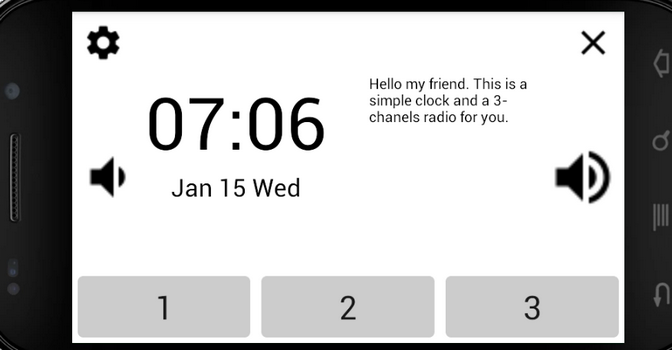
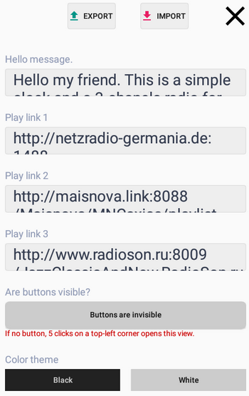
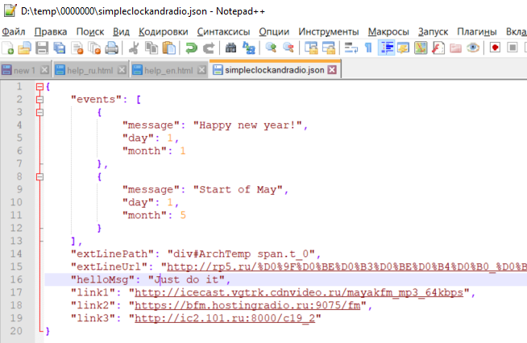
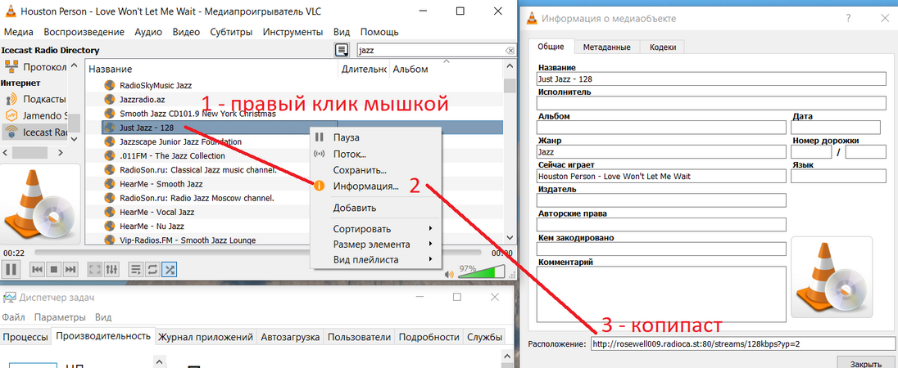

the idea to use an old android phone (or tablet). it should show time and date, and play some music.
there are 3 buttons at the bottom of the screen - 3 internet-radios. if you are lucky - it would play from defaults.

centre: time and date. left: date info or hello message.
left-top corner: settings page. right-top corner: close app.
cenre-left: volume down, centre-right: volume up.

(tob buttons in the end of this text).
the first edit-line: the hello message (is visible if no messages for a current day).
2-4 lines: internet-radio URL-s. it has default links so can work just after start.
next big button: on/off service main buttons (settings-close-volume).
2 buttons on the bottom: color themes, light and dark.
(you can ignore any step).
write some as hello message, like "love you" or "don't look at the screen - do some!" :-) .
EXPORT and find a file "simpleclockandradio.json" in a phone downloads folder.
use your computer and open simpleclockandradio.json in a text editor (or json editor).
(attention) after changing simpleclockandradio.json has to be loaded the same phone downloads folder as replace. and after that - press the IMPORT button.

link1..link3 - internet-radio URLs. I use VLC.

helloMsg - the same as from setting screen.
events: like a calendar. any record has 3 values: month/day/message. it can be more then one for the same day.
it has extro-line. (read jsoup - cookbook).
examples:
1) today holyday:
"extLineUrl": "http://www.holidayscalendar.com/"
"extLinePath": "table.wphc_table tr td"
2) weather RP5:
"extLineUrl": "http://rp5.ru/%D0%9F%D0%BE%D0%B3%D0%BE%D0%B4%D0%B0_%D0%B2_%D0%99%D0%BE%D1%88%D0%BA%D0%B0%D1%80-%D0%9E%D0%BB%D0%B5"
"extLinePath": "div#ArchTemp span.t_0"
3) weather MSN:
"extLineUrl": "http://www.msn.com/en-us/weather/today/Yoshkar-Ola,Volga-Federal-District,Russia/we-city?iso=RU&savedegree=true&weadegreetype=C"
"extLinePath": "div.current-info span.current"